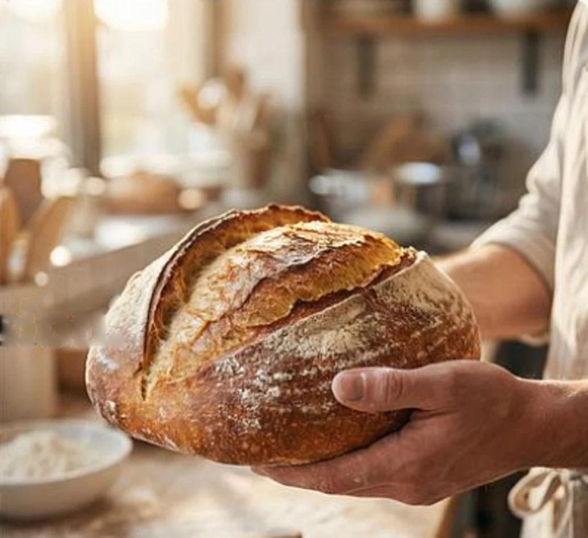

Du bon pain,
cuit chaque jour.
Fait avec patience
& passion.
Pains au levain, viennoiseries et plus encore, avec des farines bio de la région. Goûtez la différence d’une fermentation lente.
Découvrir le pain du jour